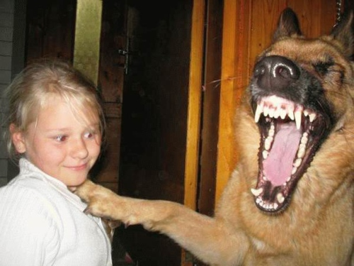

Ilie Stefan Ionut
4.12.1992 Bucuresti, Romania

Titlu, va sa zica
Acest text este un pamflet si trebuie tratat ca atare. Am sa scriu cuvinte la nimerala tocmai pentru a fii sigur ca se imparte bine pe mai multe randuri si va ramane centrat.
n
Trimite un mesaj!
Proiecte
Back to top